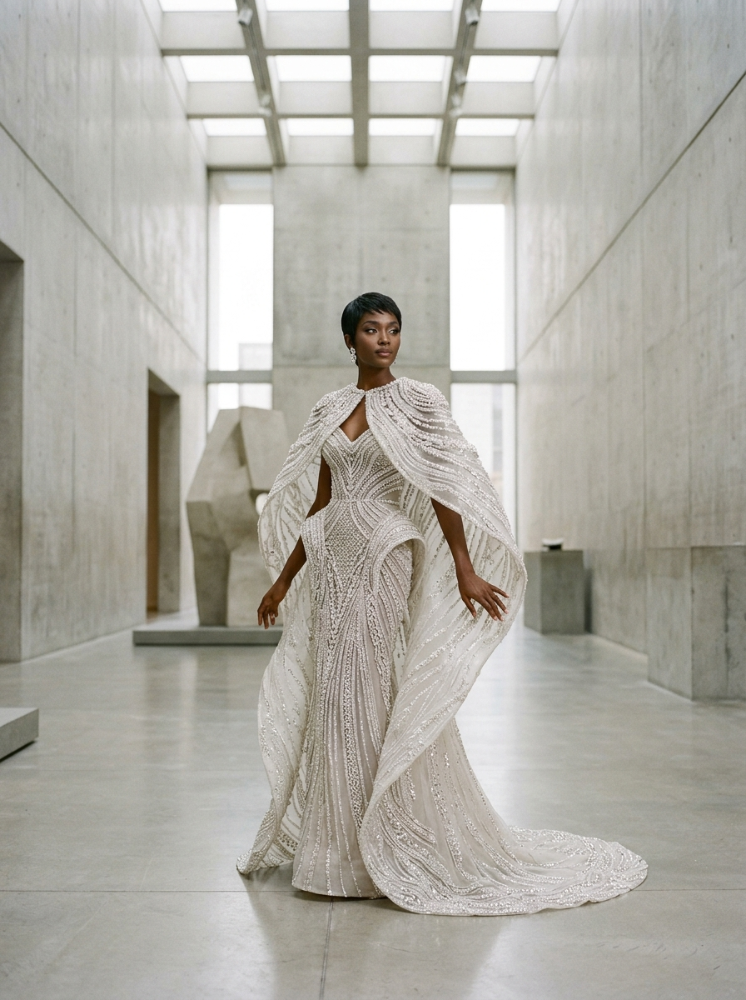

N° 01Haute Couture Eveningwear
Modern Elegance
Sculptural crystal-embellished silhouettes, architectural capes, and flowing drape balancing classical grace with avant-garde modernism.
Explore Collection